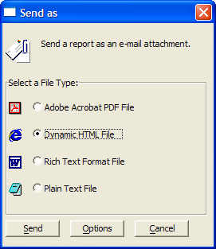

Emailing an HTML Report
Alpha Anywhere supports two different techniques for emailing an HTML report.
Interactive Operation
Display the Report tab of the Control Panel.
Select your report and click Preview.
When the report appears on your screen, click File > Send... . Picture
{kind=link}

Select Dynamic HTML and click Send.
Background Operation
Alternatively, you can create a script that generates the report and emails it without user interaction. This script selects a single page from the Invoice report and saves it to file as "c:\test.htm". It then retrieves the file and inserts it into the message field of a new email. You could retrieve the email address and invoice selection criteria from a table and send out a series of invoices using this method.
|
dim message as C query.filter = "between(recno(),1,1)" query.order = "recno()" :Report.SaveAs("Invoice", "HTML", query.filter, query.order, "c:\test.htm", .F.) wait_until(.F., 5, 5) if file.exists("c:\test.htm") then message = file.to_string("c:\test.htm") end if email_send("address@somewhere.com", "HTML Message",message, "", "", "", .F., "HTML") |
See Also